Global Recognition
Trusted on the world stage
For three decades, A'amal Group and Founder & CEO, Yassin Al Suroor, have represented Saudi business in the world's leading economic forums — from the International Chamber of Commerce to the G20.
Organisations where A'amal leads and contributes
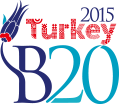
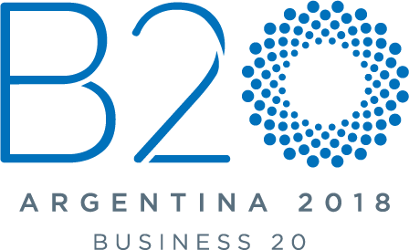
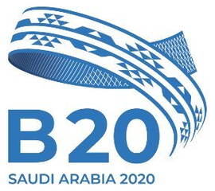
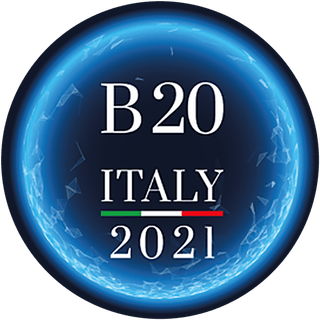
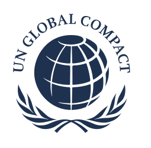
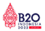
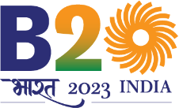
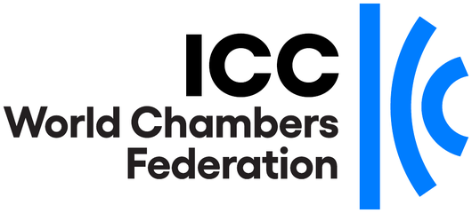
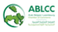
12Global leadership roles
9B20 / G20 presidencies since 2015
8Awards and recognitions
2021UN Global Compact participant
Awards
Awards and honours
Family Office Lifetime Achievement Award
Awarded to Yassin Al SuroorGlobal Inspirational Leaders Award
Awarded to Yassin Al SuroorSuccessful Businessmen in Saudi Arabia
The Gulf Entrepreneur magazine, 2024Recognition by B20 / G20 Saudi Arabia
For contributions during the Kingdom's G20 PresidencyRecognition by the World Health Organization
Awarded to Yassin Al SuroorG2T Awards
Two G2T awards received by A'amal Group and its leadershipMedia & partnerships
Global engagement
Television interviews, agreements and official meetings around the world.
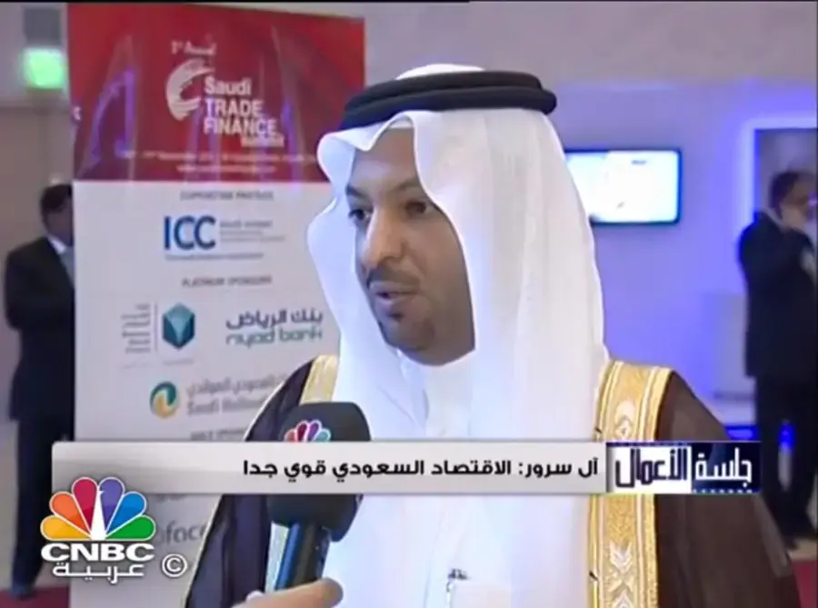
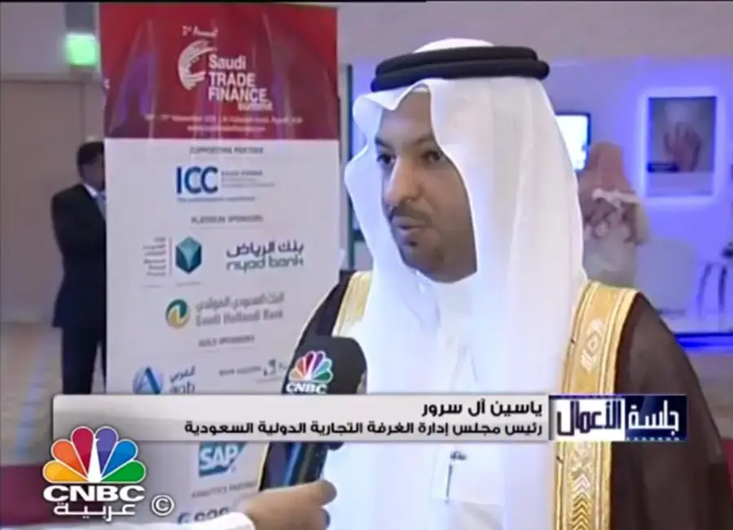
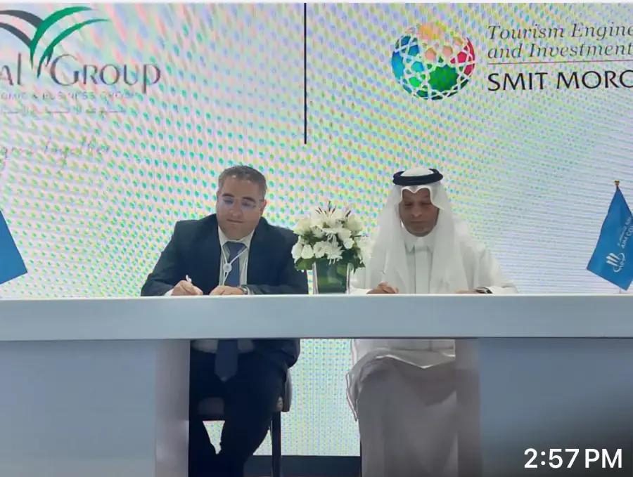
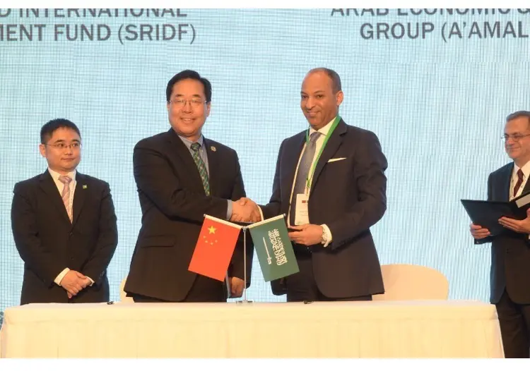
A'amal Group
A'amal at Global Stage
Conferences and forums where A'amal Group represents Saudi business.
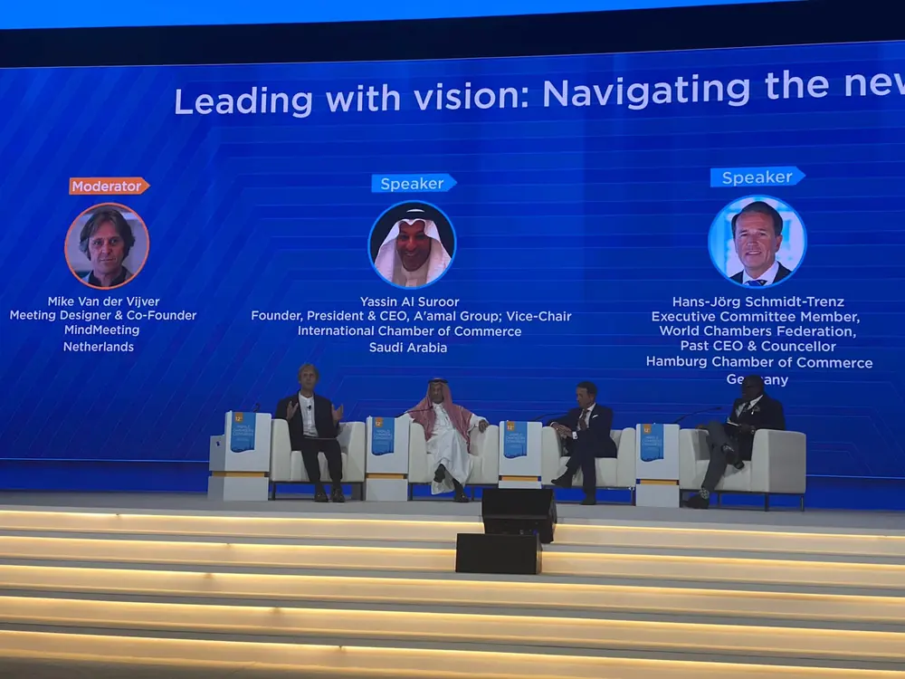
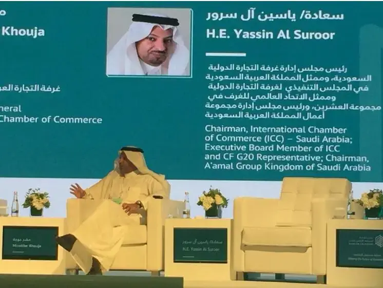
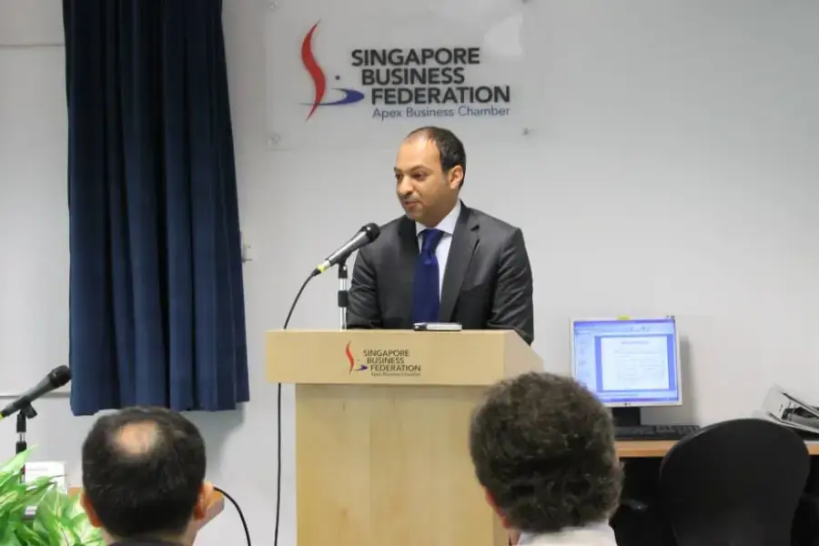
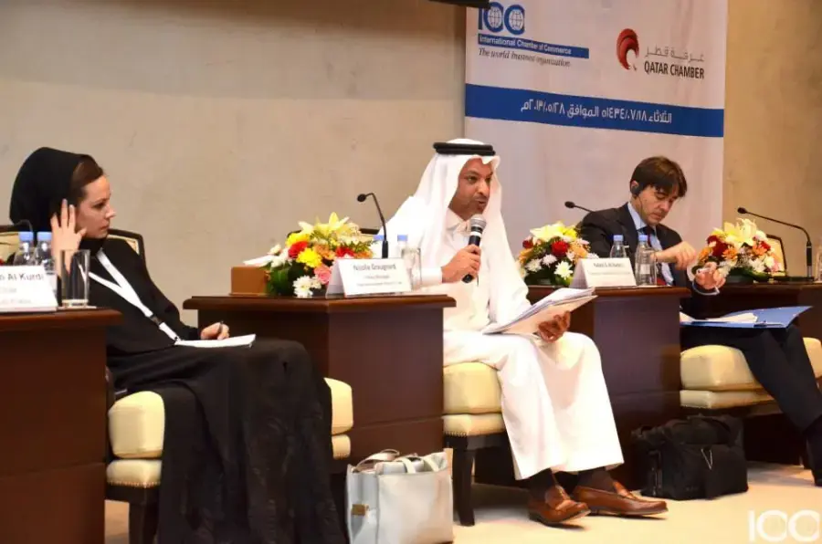
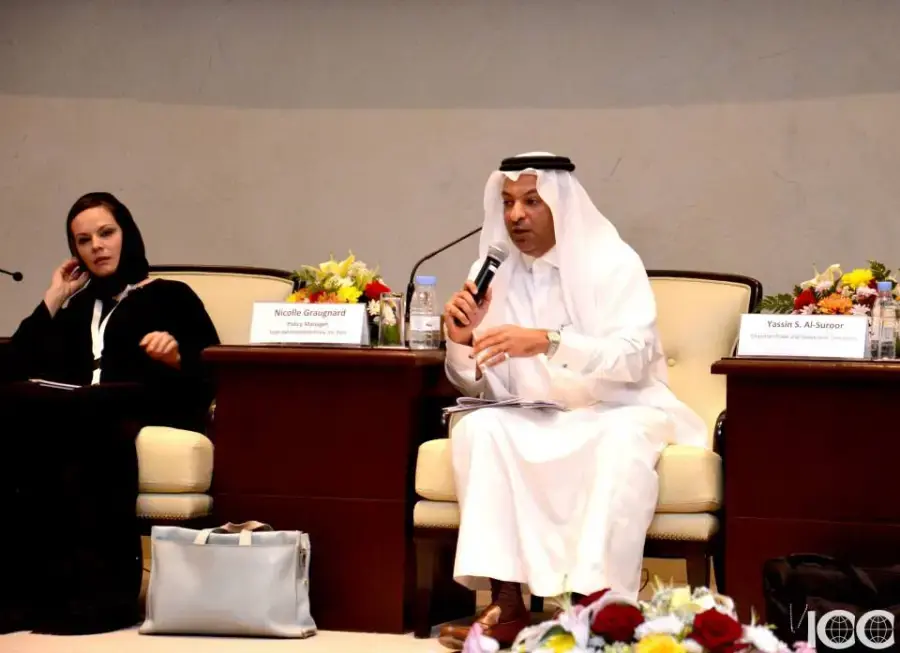
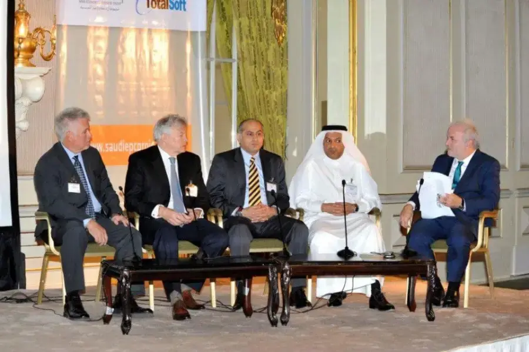